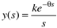
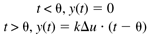
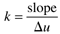
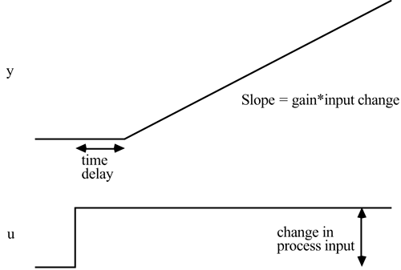
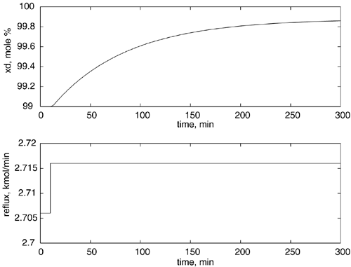
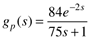
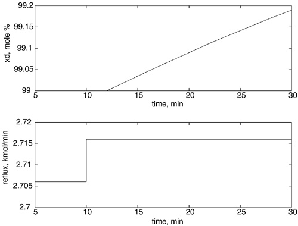
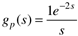

| [ Team LiB ] |
|
4.3 Integrator + Dead TimeAn integrator + dead-time process has the input-output transfer function relationship  and the output response to a step input  with the response shown in Figure 4-5. The gain, k, can be found from the slope by solving  Figure 4-5. Estimating parameters for an integrator + time-delay model from a step input test. and the time delay is clearly identified by the time required for a change in output. Integrator + dead-time models are good for describing the behavior of "integrating processes," such as vessel liquid levels or gas drum pressures. They can provide a good short-term approximation to the step response behavior of a first-order + dead-time process. Consider the step response of a distillation column, which has a fairly long time constant. We see from Figure 4-6 that it takes roughly 5–6 hours to obtain good estimates for a FODT model. Figure 4-6. Distillation column overhead composition response to a step change of 0.01 kmol/min in reflux rate at t = 10 minutes. The reader should be able to show that the transfer function is approximately  where the gain has units of mol%/(kmol/min) and the time unit is minutes. The initial response of Figure 4-6 is "blown-up" in Figure 4-7. Notice that fewer than 20 minutes (the step change is made at t = 10 minutes) is required to obtain a satisfactory integrator + time-delay model. Clearly, plant operators (and managers) will be much more willing to tolerate a 20-minute test than a 4- to 5-hour test. Figure 4-7. Distillation column overhead composition response to a step change of 0.01 kmol/min in reflux rate at t = 10 minutes. Focus is on the short-term response. The reader should be able to show that the estimated transfer function is approximately  |
| [ Team LiB ] |
|